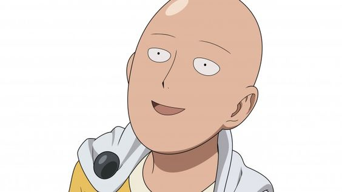
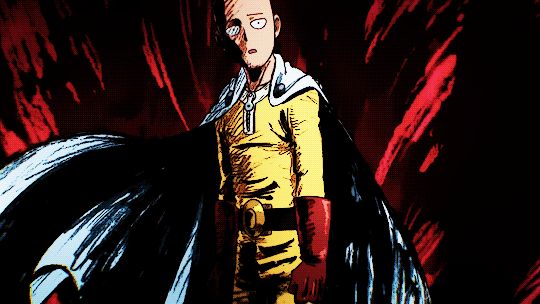
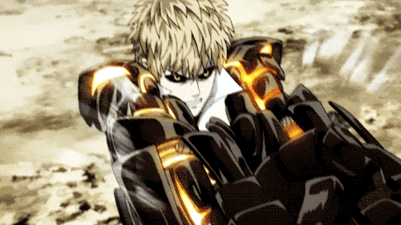

Saitama is the most powerful hero alive
Also known as "One Punch Man" because he can take down most adversaries in one punch, Saitama is just a guy who's a hero for fun, but he takes his hobby very seriously.

He got to be so powerful by committing himself to a brutal training schedule of 100 push-ups, 100 sit-ups and 100 squats along with running 10km every single day. He ate 3 meals a day, but only a banana as breakfast and also didn't use the air conditioner. These daily activies strengthened his mental resistance and made him into the monster killing machine he is today.
Saitama lives in City-Z and is constantly protecting it's denizens from evil and destructive monsters, like the mole people or aliens from far off outer space.
He registered with the Heroes Association as a C-Class Superhero, much to his chagrin, and is tasked to defend Z-City from lowly monsters. Because Saitama is so single-minded in his quest to be a hero, he has neglected the popularity contests and public relations aspects of the hero business and so he is underestimated by the public, even though he saves their lives over and over again.
Eventually, another hero, a cyborg by the name of Genos, adopts Saitama as his teacher, against Saitama's will. Genos is another serious hero, but is much weaker than Saitama, however the public believes he is one of the most powerful heroes alive, because he did well on his exam when entering the Heroes Association. Saitama did so well he broke the tests and got scored down because of it.
Genos is no slouch, however, and boasts an array of weapons including powerful robotic limbs, lightning reflexes and an arsenal of differing artillery and rockets packed into his arms and body.
Along with Genos and several of the other A-Ranked Heroes from the Heroes Association, the undervalued Saitama goes up against many mysterious monsters until he faces his ultimate rival: Boros. Even against the overwhelming strength of this ultimate enemy from a galaxy far far away, Saitama sadly can not find his match and defeats him with one punch.